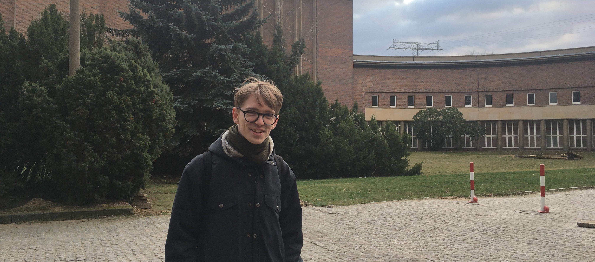

Crafting immersive auditory experiences from live performances to virtual reality, I seamlessly integrate soundscapes that elevate narratives. My dual expertise in sound design and composition ensures a cohesive and impactful audio experience across various applications, including games and workshops.
Bridging technology and creativity, I develop interactive sound elements for diverse platforms. With a deep understanding of sound engineering and programming, I ensure a seamless fusion of artistic vision and technical execution. In the realm of interaction design, I connect technology with the sonic user experience, specializing in sound-centric interactive systems. From physical computing to installations, my goal is to visually engage audiences while immersing them in a rich, interactive audio environment, creating a profound and memorable sonic experience.
Connect with me to discuss your project, ideas, and aspirations. Whether you’re in need of a sound designer, composer, or an innovative mind to elevate your audio, I’m here to collaborate and bring your ideas to life. Let’s shape a distinctive sonic narrative that resonates with your audience and leaves a lasting impression.